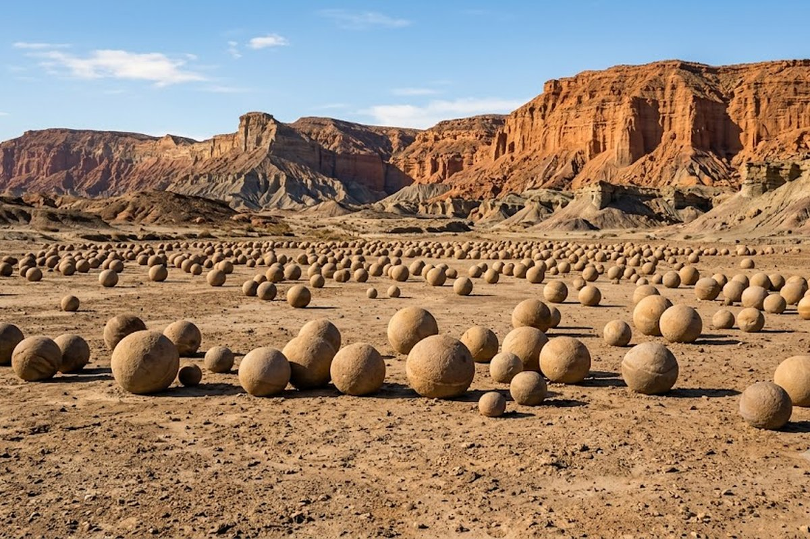
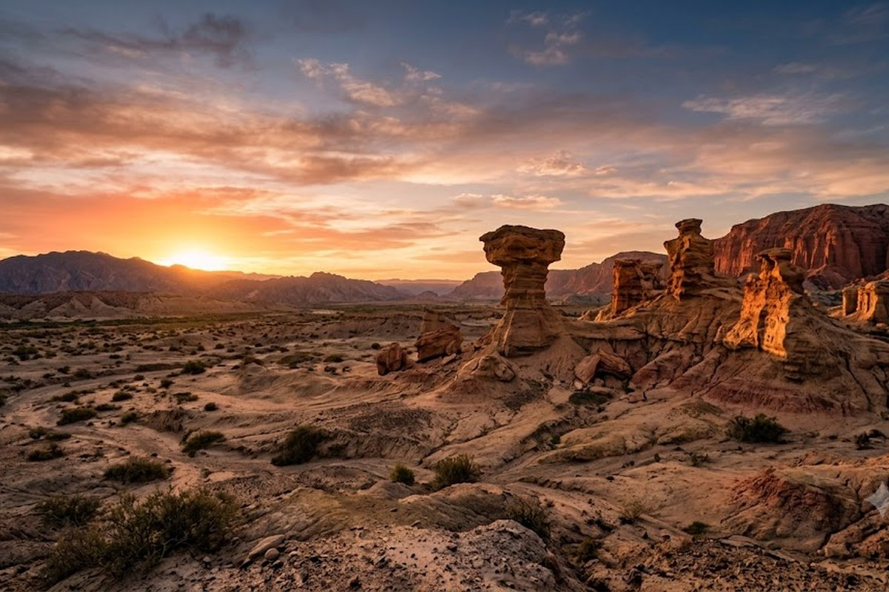
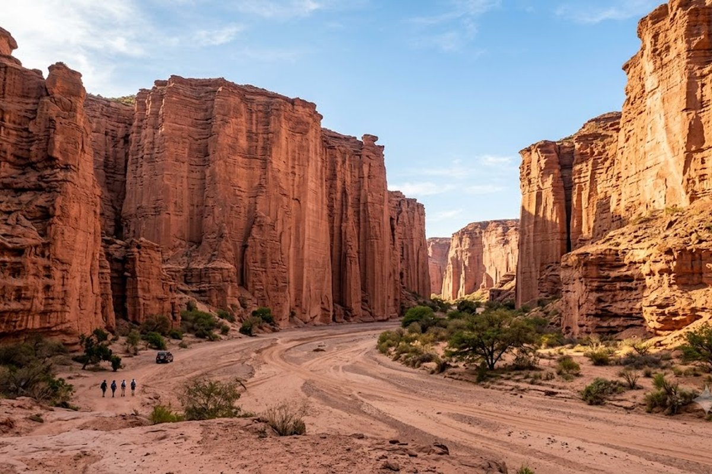
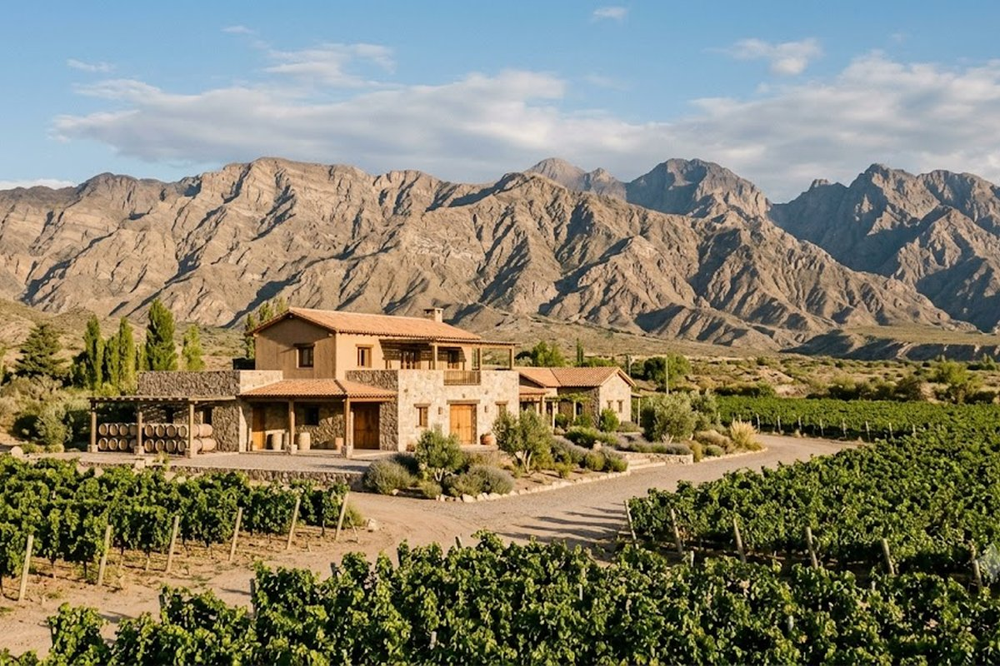

El paisaje más marciano de Argentina. Formaciones rocosas de 230 millones de años, dinosaurios reales y el vino de mayor altitud del mundo.
San Juan es el destino más subestimado de Argentina. El Valle de la Luna (Ischigualasto) tiene 230 millones de años y fue declarado Patrimonio Natural de la UNESCO — los dinosaurios que habitaban este lugar son los ancestros directos de los más grandes del planeta. El paisaje es literalmente marciano: no hay vegetación, las rocas tienen formas imposibles y la luna llena lo convierte en algo de otro mundo. A 160 km está Talampaya, igualmente impresionante. Y en el camino, los viñedos de mayor altitud del mundo.



El Parque Provincial más antiguo del mundo geológico. Formaciones como La Cancha de Bochas, El Submarino y El Hongo en un paisaje extraterrestre.
Los fósiles de dinosaurios encontrados en Ischigualasto son de los más importantes del mundo — el Eoraptor y el Herrerasaurus vivieron acá hace 230 millones de años.
Las bodegas del Valle de Zonda y Pedernal producen algunos de los mejores Malbec y Bonarda del país a más de 1.200 msnm.
A 160 km de Ischigualasto, los cañones de Talampaya tienen paredes de 150 metros de altura con pinturas rupestres de 1.500 años.
La excursión nocturna en Ischigualasto durante la luna llena es una de las experiencias más únicas de Argentina — cupos muy limitados.
El Dique Ullum y el Cuesta del Viento (Iglesia) son los mejores spots de windsurf y kitesurf de Sudamérica por sus vientos constantes.
La excursión de luna llena en Ischigualasto tiene cupos muy limitados y se agota meses antes — si tu viaje coincide con luna llena, reservá esto antes que el hotel. Y el combo Ischigualasto + Talampaya en un mismo día es largo pero se puede: salida a las 7am, los dos parques y regreso al caer la tarde. Llevá comida, agua y protector solar — no hay nada en el camino.
San Juan + Mendoza: El combo natural de Cuyo. A 3 horas por autopista, juntar el Valle de la Luna con la Ruta del Vino mendocina en 5-6 días es el itinerario perfecto para conocer el oeste argentino.
¿Qué tiene San Juan para ofrecer turísticamente?
El Valle de la Luna (Ischigualasto) es uno de los 5 parques naturales más importantes del mundo según la UNESCO. También tiene Talampaya (con La Rioja), bodegas de altura, diques para deportes acuáticos y la ciudad con museos de dinosaurios únicos en el mundo.
¿El Valle de la Luna es muy lejos del centro?
A 80 km de la ciudad de San Juan por ruta pavimentada (1 hora). Todas las agencias y hoteles organizan excursiones diarias — no necesitás auto propio.
¿Se combina bien con Mendoza?
Perfectamente. Están a 3 horas por autopista. Lo ideal es 2 noches en San Juan (Valle de la Luna) + 3 noches en Mendoza (Ruta del Vino + Alta Montaña).
¿Cuándo ir para evitar el calor?
Marzo a noviembre es el período ideal. Diciembre a febrero el calor supera los 40° y visitar el Valle de la Luna se vuelve muy duro. La excursión nocturna de luna llena es la excepción: se hace todo el año.
Armamos el circuito cuyano completo con todo incluido.
💬 Consultar con Gemicheck